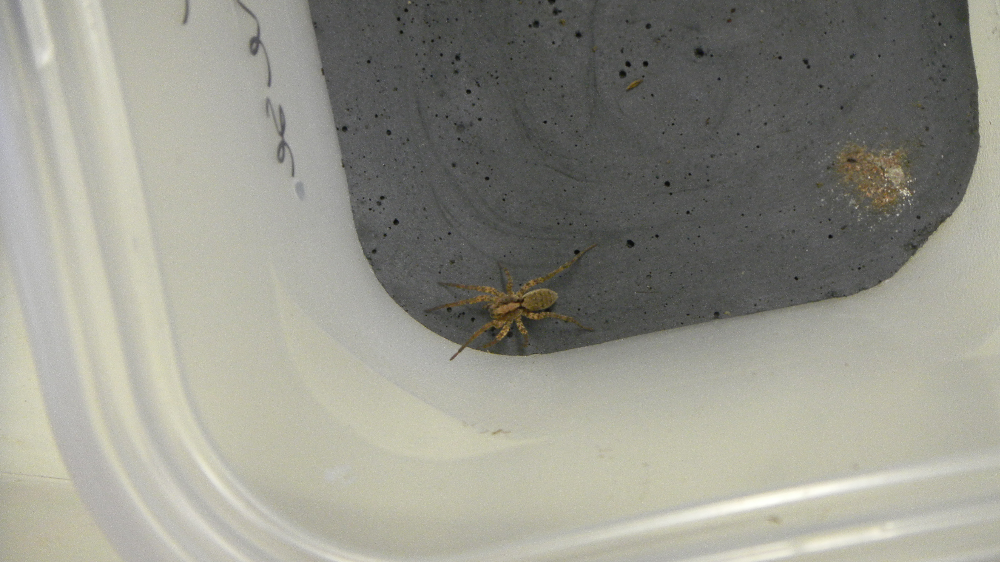

Fear of Predation in Decomposers
Many animals experience fear in the presence of a predator and we are looking to see how this impacts detritivores (animals that eat dead things)
We study the response to predators by the rolly-polly ( Tracheolipus rathkii ).
Predators are scary and this fear changes how their prey behave. The impact of fear is a long-standing research area in ecology that, in part, tries to predict how fear of predation adds a different dimension to the role of predators in ecosystems. Yet, it is still difficult to know when prey animals will be afraid of a predator enough for it to change their behavior and impact on ecosystems. The studies that have surveyed prey for fear effects don't always find a response. Furthermore, there is more evidence for fear effects in herbivores than for detritivores or decomposers.
We use this wolf spider ( Gladicosa glucosa ) as a predator because they eat many of the detritivores in our old-fields.
My work with Os Schmitz has aimed to measure the response of some common decomposer species--rolly-pollies, crickets, millipedes, and earthworms--to predators. We can infer a fear response by looking for increases in breathing rate (metabolism), increased consumption of carbohydrates, and changes in behavior. Os's previous work has shown that predators who ambush prey tend to cause a stronger fear response. This is partly because their attacks are scarier and partly because they don't eat too many prey so there are some left to be afraid! Our preliminary results suggest that the reponse of the prey species response also matters. Prey whose methods of escape are based on reaction time show stronger evidence for fear effects than species who defend themselves chemically or physically. Check back soon to hear how our full results turn out!

In our experiments we track the consumption of leaves using repeated images and summing up the area consumed.